Dit is de middelste baan van de Nederlandse vlag
| 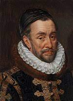 | 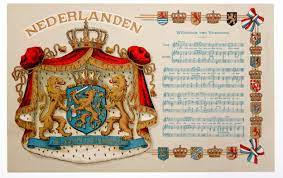 | ||
| 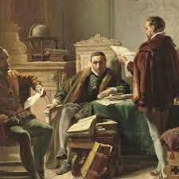 | 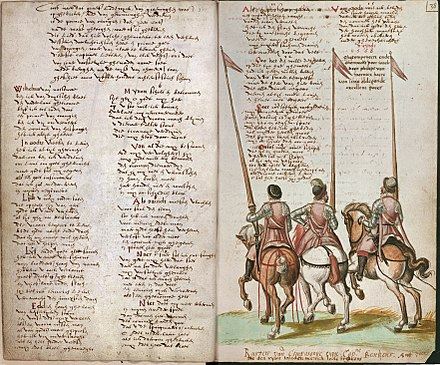 | ||
| 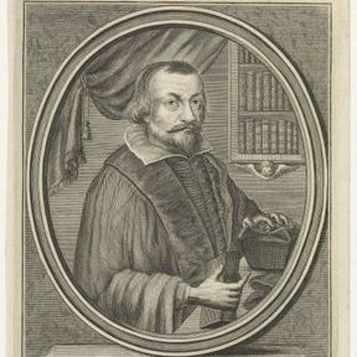 | 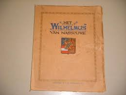 | ||
| 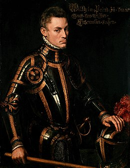 |  |
De vlag van Nederland staat symbool voor Nederland en de eenheid en de onafhankelijkheid van het gehele Koninkrijk der Nederlanden. Het rood-wit-blauw is zowel te land als ter zee in gebruik als civiele vlag, dienstvlag en oorlogsvlag.
De Nederlandse vlag is een horizontale driekleur in rood, wit en blauw. In de vlaginstructie van het Ministerie van Algemene Zaken worden de kleuren benoemd als helder vermiljoen, helder wit en kobaltblauw. In normblad 3055 zijn deze kleuren vastgesteld in Éclairage-coördinaten. Deze kleuren zijn niet direct in Pantone-codering om te zetten, zodat voor de laatste uiteenlopende waarden gebruikt worden.
| 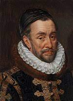 | 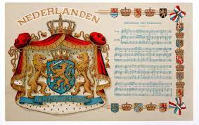 | ||
| 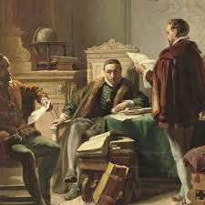 | 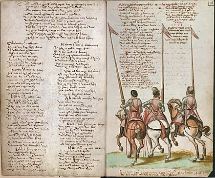 | ||
| 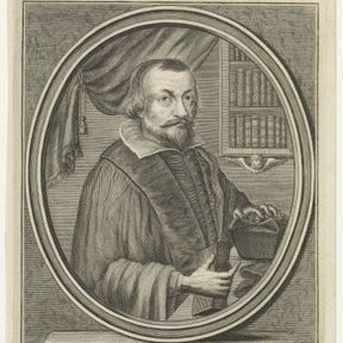 | 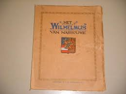 | ||
| 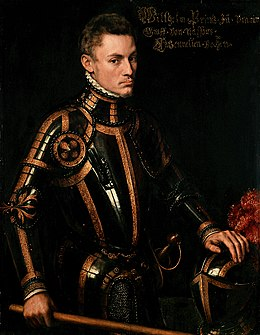 | |
Het Wilhelmus is sinds 1932 officieel het Nederlandse volkslied. De tekst is omstreeks 1570 aan het begin van de Tachtigjarige Oorlog geschreven op een bestaande melodie. De huidige variant van die melodie dateert uit het begin van de 17e eeuw.
De tekst weerspiegelt Willem van Oranjes tweestrijd inzake de opstand in de Nederlanden: enerzijds probeert hij als vertegenwoordiger van het staatsgezag trouw te zijn aan de Spaanse koning, anderzijds volgt hij zijn geweten dat hem voorschrijft in de eerste plaats God en het Nederlandse volk te dienen.